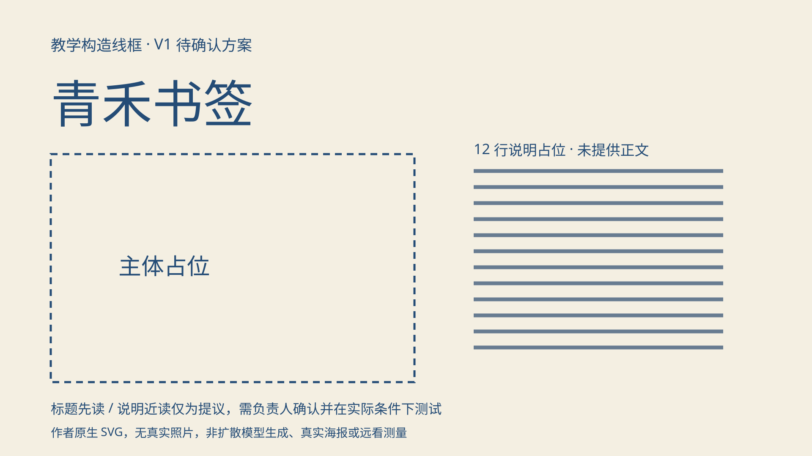

虚构青禾书签要面向校内阅读周路过展台的学生，制作横向 1920×1080 的视觉材料
原卡同时要求“标题远看可辨”和“同事要求塞入12行说明”
- ■在证据单写下你会先安排标题、说明还是背景，以及当前理由
- ■本节起草小型商品简报，纸笔即可完成，建议微任务时间为 30 分钟
- ■材料是教学构造。没有真实顾客照片、模型运行或远看测试记录
让制作和评审面对同一组要求，
再决定怎样生成、排版和核对
 VER. 2611
Built with impress.js
VER. 2611
Built with impress.js
先保存自己的初判，再读完整材料判断视觉选择应该服务什么用途
虚构青禾书签要面向校内阅读周路过展台的学生，制作横向 1920×1080 的视觉材料
原卡同时要求“标题远看可辨”和“同事要求塞入12行说明”
制作前先逐字保留这些要求，避免用风格词覆盖具体条件
| 原字段 | 固定材料原文 |
|---|---|
| brand | 虚构青禾书签 |
| audience | 校内阅读周路过展台的学生 |
| canvas | 横向1920×1080 |
| fixed | 商品名青禾书签，蓝/米白配色，不得新增功能承诺 |
| variable | 视角，背景 |
这些原文决定哪些可以起草，哪些需要等待补证或负责人确认
每项视觉选择都要说明服务谁、帮助看见什么，以及如何核对
| 已有方法 | 本节继续使用 | 新增的可观察产物 |
|---|---|---|
| 按字段回原文 | 保留商品名、配色和责任原文 | 稳定项、可变项、待确认项 |
| 逐条核查主张 | 无材料不补功能或授权 | 素材对象及待核状态 |
| 目标和约束进入简报 | 保留初判与修订理由 | 用途、视觉安排与检查方法对应 |
U10 以后再进入生成设置和样张。本节的纸面简报可以完成，不要求模型生成来替代需求判断
视觉简报先组织用途、受众、必要信息与视觉约束
视觉简报把传播用途、受众、必要信息和视觉约束组织成可执行、可审阅的任务说明
视觉简报 Visual brief 先说明给谁看、在哪里使用、希望对方理解或采取什么行动，再给画幅、信息层级、内容和参考用途
本课区分必须保留、可探索、尚待确认三类信息。未知日期和产品规格留待确认，每项要求配相应检查方法
青禾书签可以提出“让路过学生先认出商品，再停留了解”的用途目标草案。它仍需负责人确认，不能写成已测得的传播效果
简报面向整个制作与评审流程，提示词只是给某个工具的一次输入
青禾书签的商品名、配色、不得新增功能、用途目标草案和待确认项共同约束后续步骤
可探索背景和视角，商品名与必要说明可保留为人工排版任务，日期留占位待确认
把候选回到同一份简报检查，再由活动负责人确认日期与终稿
明确简报仍需人工审阅，不能保证模型遵从。没有实际生成时，只能记录拟采用的制作分工
表达参数需要回到阅读任务，不能只靠术语堆叠判定需求清楚
| 表达维度 | 青禾书签的拟安排 | 怎样回到用途 |
|---|---|---|
| 主体和文字 | 先识别商品名，说明分组 | 路过学生先知道展台在介绍什么 |
| 构图和尺度 | 标题优先，给说明留区 | 让读者知道先读和再读什么 |
| 视角和背景 | 在允许范围内探索 | 检查是否遮挡商品或干扰标题 |
| 色彩和风格 | 蓝/米白配色固定 | 核对原要求，风格偏好仍可确认 |
| 光线和材质表达 | 有需要才提出参考用途 | 未给产品材质，不把外观拟像写成事实 |
构图安排画面元素的位置、尺度和空间关系，使信息形成可理解的整体
构图 Composition 包括图像主体与背景，也包括文字、留白和分组。本例先规定想传达的信息顺序，再比较位置、大小与对齐
信息层级 Visual hierarchy 表示本例希望读者先注意、再阅读的信息顺序。标题先识别、说明随后读，是待检验的安排
居中、网格或非对称都是可选方法。选择要回到受众和用途，实际阅读顺序仍须观察
这幅线框只提出信息层次，不证明真实学生已经能远看读清

来源：课程作者自制，2026-11-06 · 截至 2026-11-06
品牌一致性保留明确规则，也容纳项目允许的场景变化
品牌一致性是在不同内容与渠道中遵守一组明确的品牌表达规则，同时保留适合场景的变化
品牌一致性 Brand consistency 在本课拆成稳定项与可变项。名称、标识和产品属性应核对，背景或画幅能否调整由具体项目规则决定
青禾书签本题画幅固定，只有视角与背景列为可变。配色相似不能掩盖商品名错误或新增功能承诺
检查同时看单件是否合规、跨件是否冲突，以及裁切和排版是否破坏必要信息。品牌一致也需分别核查事实、素材使用条件和传播效果
稳定项、可变项和待确认项承担不同任务，不能相互代填
| 类别 | 本题对象 | 拟检查 |
|---|---|---|
| 稳定 | 青禾书签、蓝/米白、无新增功能 | 文案回读原卡，配色逐项比对 |
| 稳定 | 横向 1920×1080 | 核对文件尺寸与横向比例 |
| 可变 | 视角、背景 | 比较是否干扰主体和必要文字 |
| 待确认 | 12 行说明与远看标题 | 负责人确认取舍后试排和检查 |
| 待确认 | 日期、终稿、顾客照片 | 分别找负责人和照片材料记录 |
远看识别和大量说明会争用画面空间，原卡尚不足以确认哪种安排可行
| 提议草案 | 保留的阅读任务 | 需要确认与验证 |
|---|---|---|
| 同屏分层 | 标题先读，12 行说明供近读 | 是否允许分远近阅读，实际正文能否放入 |
| 说明另载体 | 主画面突出标题，完整说明另给 | 负责人是否同意改变说明承载位置 |
原卡没有 12 行正文、观看距离和显示条件。先提出可比较方案，暂不宣布两者都满足“远看可辨”或已经无解
问清内容优先级、允许的安排和测试条件，才能继续制作
给活动负责人的起草消息
“原卡同时要求标题远看可辨和放入 12 行说明。请确认说明能否近读，或是否可另给承载位置。请补充说明原文、实际观看距离与显示条件，以便试排检查。日期与终稿仍由您确认。”
“看起来专业”缺少共同标准，检查要能回指简报的具体要求
| 要求 | 可观察的检查计划 | 本节可记录的状态 |
|---|---|---|
| 标题远看可辨 | 在确认的设备与距离读出标题，记录条件和结果 | 未取得样张与条件，待测 |
| 12 行说明 | 收到原文后逐行核对遗漏，再测允许的阅读方式 | 原文未给，待补 |
| 名称与功能 | 对照原卡回读文案，标出新增主张 | 简报文字可实际核对 |
| 配色与画幅 | 对照蓝/米白规则及 1920×1080 尺寸 | 最终图待生成或排版后查 |
“注意版权”不能代替对提议使用的真实顾客照片登记状态
| 登记项 | 本题可写内容 |
|---|---|
| 具体对象 | 有人提议使用的某真实顾客照片 |
| 已有材料 | 照片未提供，许可未提供 |
| 当前决定 | 待核期间不纳入草稿素材，不补造照片，不默认授权 |
| 下一步 | 请提议者提供拟用照片、来源与适用用途的许可材料，再核后续采用条件 |
本任务文字为课程构造，不能据此宣布任何真实商标或照片已获授权。此处做材料登记，不作个案法律结论
简报写清下一位需要确认的人，避免起草稿被当成可发布文件
保留商品约束，提出信息安排、待确认问题与检查方法
确认日期、要求的取舍和终稿。日期未给时保留待确认，不自行填“下周一”
保留版本、确认内容和仍未完成的检查，照片材料另核。当前只能交待确认简报
示范先保留执行前判断与范围，本次只起草简报，不生成图片
示范角色原想放大标题、缩小说明放右侧，读卡后发现近读尚未确认
| 对应输入位置 | 操作或分析记录 |
|---|---|
| /audience、/canvas | 路过展台的学生，横向 1920×1080。提出先识别商品再了解的用途草案 |
| /fixed、/variable | 名称、蓝/米白、无新增功能保持，仅探索视角和背景 |
| /requests | 远看标题和 12 行说明需澄清，提出同屏分层或说明另载体供确认 |
| /rightsRecord、 /responsibility | 顾客照片未给且无许可，日期与终稿交活动负责人确认 |
修订稿把已知要求、提议方案和确认事项分开写出
修订后产物/决定
为校内阅读周路过展台的学生起草虚构青禾书签横向 1920×1080 视觉简报。用途目标草案为先认出商品、再停留了解，交负责人确认。保留商品名青禾书签、蓝/米白配色，不得新增功能承诺，视角、背景可探索
优先提议标题先读、12 行说明近读的同屏分层，若负责人同意，可考虑说明另载体。先询问是否允许近读或另载体，并索取说明原文、观看距离和显示条件。日期与终稿由活动负责人确认，当前均待确认
这份简报的完整性依赖可回读的决定与真实过程记录
修订后产物/决定续
简报逐项对照名称、配色、画幅及功能主张。收到说明原文后逐行核对，在负责人确认的设备与距离检查标题可辨和说明阅读。某真实顾客照片及许可均未提供，登记待核，暂不纳入素材，请提议者补来源及适用用途许可后再核，当前不补造或默认授权
实际方法、未测项、本人/AI 贡献
示范角色用纸笔阅读原卡、标字段、改写简报和列检查计划，未使用 AI。照片、许可、12 行正文和日期未提供，未生成、未排版、未做远看测试、未取得负责人回复。文字判断已做，图像与发布检查仍待执行
先对照原卡找遗漏，再决定哪些句子可以保留
候选写成“青禾书签，高级感，蓝白，电影光线，1920×1080，标题巨大，12 行小字，专业营销，直接生成发布”
把缺少依据的承诺改成具体决定、确认人和下一项检查
待改稿写“为了好看，12 行说明直接删掉。顾客照片网络上找一张即可，日期写下周一。看着顺眼就能发。”
合理替代句需要与本题输入相容，不必逐字复制示范
可接受的修订
“12 行说明先保留为待确认要求，请活动负责人确认是否允许同屏近读或另载体，并补说明原文和观看条件。某真实顾客照片和许可均未提供，登记待核，当前不采用也不补造。日期由负责人确认，终稿在要求确认及相应检查完成后交负责人决定。”
检查可以写成“对照原卡核商品名和功能主张”，或“在确认设备与距离读出标题并记录结果”。前者现在可做文字核对，后者当前仍是计划
建议 30 分钟交一张证据单及实际短简报，学生耗时尚未验证
读商品受众/画幅/稳定与可变要求，起草短视觉简报。
把12行说明与远看标题冲突交给负责人确认，列可观察检查。
登记未授权顾客照片为待确认，不补图、不默认可商用。
只交本微任务范围。纸笔和给定文本即可，无账号或模型调用要求，不继承背景整题的任务、时长或 100 分量规
使用 AI 时保留可见提示、返回、人工修改与采用理由
| 原四部分 | 应能找到的具体内容 |
|---|---|
| 执行前判断/范围 | 本人初判、只起草本任务简报的范围 |
| 对应输入位置的操作或分析记录 | 受众、固定/可变、冲突、权利和责任的原字段及分析 |
| 修订后产物/决定 | 实际短简报、检查计划与仍待确认事项 |
| 实际方法、未测项、本人/AI贡献 | 本人怎样核对与修订，真实 AI 用途或未使用，未测范围 |
未知版本记未知，未用 AI 如实写未用，不补造对话或模型运行
每项各记 0 或 1，依据最终采用的信息独立判断
| 原自查项 | 记 1 的可核信息 | 记 0 的情况 |
|---|---|---|
| C1 视觉要求回到用途 | 结合路过展台的学生，解释标题、说明等视觉选择服务的识别或阅读任务 | 只说好看、高级或列术语，没有用途联系 |
| C2 稳定/可变清楚 | 名称、蓝/米白、无新增功能及横向画幅保持，视角/背景可变，未擅改规则 | 将固定项改成可变，遗漏关键规则或新增功能 |
连续文字、表格和纸笔按实际信息同分。原初判清楚修正后按最终判断评，未修正的相反结论使对应项待补
提出待确认的问题可以完成本题分析，实际确认和测试结果仍按事实记录
| 原自查项 | 记 1 的可核信息 | 记 0 的情况 |
|---|---|---|
| C3 冲突有澄清 | 点明远看标题与 12 行说明的冲突，交负责人确认优先级或允许安排，列对应可观察检查 | 擅自删说明、直接缩小，或只写“沟通一下” |
| C4 未知权利有明确对象与待核状态 | 指向提议的真实顾客照片，记照片/许可未给与待核，当前不补造或默认授权 | 只说注意版权，补图或宣布已授权可商用 |
四项合计 4 分，不给半分，不自动换算正式课程成绩。缺证据记待补，未执行的图像检查继续记待执行
一份简报可能满足四项自查，过程记录仍然缺项
| 交付状态 | 四项自查 | 四部分完整性 |
|---|---|---|
| 简报与方法完整，缺本人初判 | 若四项信息都有，可得 4 | 第一部分待补 |
| 有四个标题，内容只写“已完成” | 没有支持四项的实际信息 | 有标题也未交齐实际内容 |
| 完整纸笔简报与真实记录 | 按实际信息逐项评 | 可交齐，远看测试仍未执行 |
A20 本节只记录小型商品简报的局部证据。四分、过程齐全与完整品牌设计能力分开登记
其他输入逐值保留，先判断原同屏近读方案还能承诺什么
| 唯一变化位置 | /requests/1 |
|---|---|
| 原 V1 | 同事要求塞入12行说明 |
| 公开 V2 | 活动负责人要求12行说明同屏，且均需在与标题相同距离可读 |
检查 12 行说明与标题在共同条件下可读的可行性，不能直接沿用近读方案
可接受的 V2 修订
撤回“说明只需近读”及“说明另载体”的原提议，按同屏、同距离可读重新试排。请负责人补充 12 行原文、实际距离和显示条件，比较标题与说明的阅读结果，若条件下难以兼顾，带着记录请负责人重新决定要求或安排
没有正文、样张和观看条件，当前不能判断必然无解或已测试可行。商品规则、照片待核和日期/终稿职责继续保持，不能用 V2 替原 V1 补确认
用自己的句子说明选择、依据、确认与检查，再回卡核对遗漏